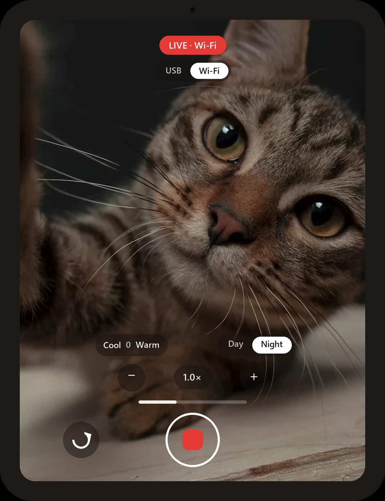

CatCam turns any Android tablet into a crisp Windows webcam, over Wi-Fi or USB. Two installs, zero setup: they find each other.
Windows 11 (22H2+) · Android 8+ · same network, or a cable

LIVE · Wi-Fi No cable neededor plug one in, your call Finds your PC by itselfno IPs, no pairing codesEverything below is shipped and real, not a roadmap.
Stream cable-free over your home network, or plug in a USB cable for a wired link. Flip between the two from the tablet or from the PC's tray menu, whichever is closer, without stopping your call.
The tablet announces itself on your network and the PC connects on its own. No IP addresses, no QR codes, no pairing screens. If the tablet moves, the PC follows.
Zoom with a tap, nudge the color warmer or cooler, and flip to a Night mode tuned for dark rooms. Each camera remembers its own settings, and the tablet preview shows exactly the frame your call receives.
There is nothing to sign up for and nowhere for your video to go except your own PC. No analytics, no telemetry, no third-party services. The code is public, so this is checkable, not a promise.
Read the privacy policy